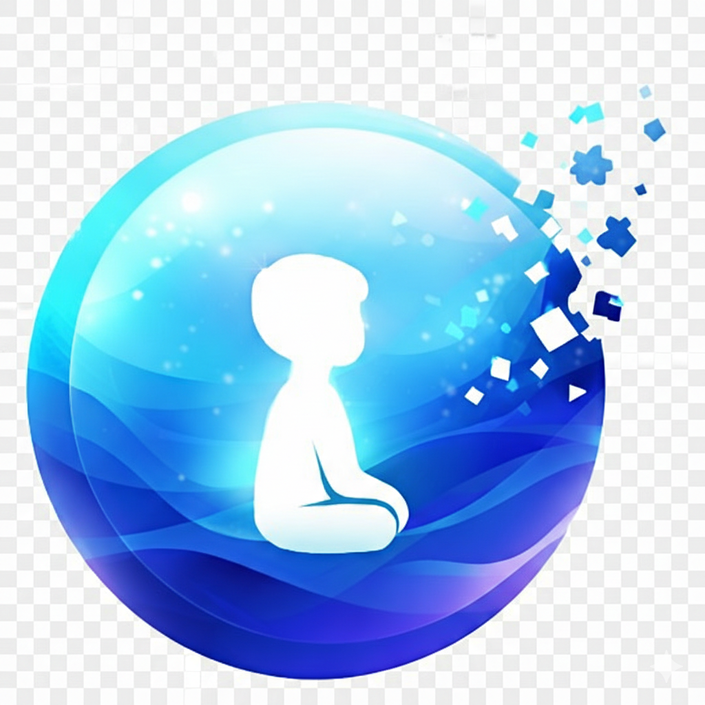
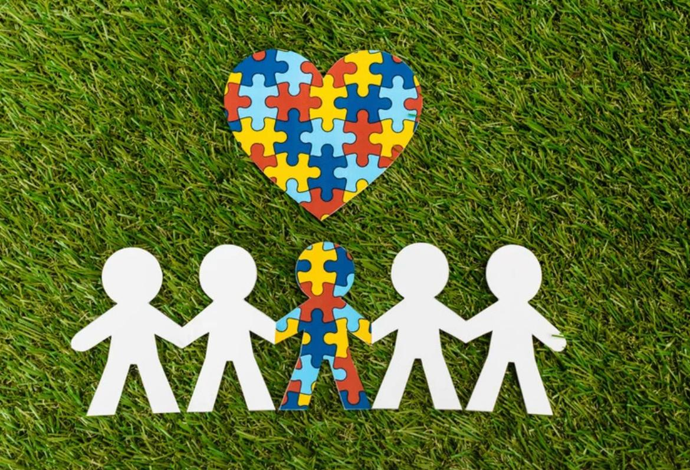

Cooperativa Sociale specializzata nel supporto
alle persone con Disturbo dello Spettro Autistico
attraverso interventi basati sul metodo "ABA"
Siamo la Cooperativa Sociale “Oltre le Sfumature” e ci impegniamo a offrire supporto e trattamenti specializzati alle persone con Disturbo dello Spettro Autistico, accompagnandole fin dai primi anni delle scuole medie fino all’età adulta. Lo facciamo attraverso interventi basati sul metodo ABA, mirati a favorire lo sviluppo delle competenze e l’autonomia individuale.
La nostra missione è affiancare ogni persona nel percorso verso una maggiore autonomia personale, sociale e lavorativa, promuovendo il benessere, l’inclusione e una qualità di vita piena e soddisfacente.
Crediamo che ciascuna persona abbia potenzialità uniche. Il nostro impegno è riconoscerle e valorizzarle attraverso servizi altamente specializzati, approcci scientificamente validati e percorsi personalizzati, costruiti nel rispetto della dignità, dei tempi e delle caratteristiche di chi ci affida la propria crescita.

Il Disturbo dello Spettro Autistico (DSA) è una condizione del neurosviluppo che coinvolge comunicazione, interazione sociale e comportamenti ripetitivi.
Non è una malattia contagiosa, non è causato dallo stile educativo e non è una colpa.
Ha una base biologica con una forte componente genetica e multifattoriale.
Ogni bambino è diverso. Ogni profilo è unico.
Negli anni ’50 e ’60 si credeva che l’autismo fosse una forma precoce di schizofrenia infantile e che fosse causato da problemi nel rapporto tra genitori e figli.
Oggi sappiamo con certezza che questa teoria è sbagliata.
L’autismo non è causato dall’atteggiamento dei genitori, né da mancanza di affetto.
Questo è stato uno dei cambiamenti più importanti nella storia della ricerca.
A partire dagli anni ’70, la scienza ha iniziato a riconoscere che l’autismo ha una base biologica.
Oggi è classificato come Disturbo dello Spettro Autistico.
Nel 2013, con il DSM-5, tutte le diagnosi precedenti (come la Sindrome di Asperger) sono state riunite sotto un’unica definizione: Disturbo dello Spettro Autistico.
La nostra struttura è organizzata per essere accogliente, sicura e funzionale allo sviluppo delle autonomie. Gli spazi sono pensati per favorire:
Ogni ambiente è strutturato per garantire prevedibilità, riduzione dello stress sensoriale e sicurezza.
Il nostro servizio si avvale di un’équipe multidisciplinare composta da:
Il Centro diurno offre attività educative e di socializzazione, con spazi sicuri e accoglienti per tutti gli utenti.
Approfondisci →Il servizio “Dopo di noi” accompagna i ragazzi e le famiglie nella costruzione di percorsi di autonomia e inclusione.
Approfondisci →I laboratori sono progettati per sviluppare abilità pratiche, creative e cognitive in un ambiente stimolante.
Approfondisci →
Esistono due modi di intervenire sul
Disturbo dello Spettro Autistico, ma
noi lavoriamo con il metodo più efficace: ABA.
Il metodo ABA (Applied Behavior Analysis) supporta le persone con Disturbo dello Spettro Autistico insegnando nuove abilità e riducendo comportamenti problematici tramite strategie sistematiche e misurabili. Utilizza rinforzi, modellamento, prompting e scomposizione dei compiti per favorire apprendimento e generalizzazione delle abilità. Gli interventi sono personalizzati e monitorati con dati, coinvolgendo attivamente le famiglie. ABA aiuta a sviluppare comunicazione, competenze sociali, autonomia e adattamento nei diversi contesti di vita.
Approfondisci di più →
Il metodo TEACCH supporta le persone con Disturbo dello Spettro Autistico adattando l’ambiente alle loro esigenze. Usa strutturazione visiva, routine e attività sequenziali per rendere tutto chiaro. Aiuta a sviluppare autonomia, abilità sociali e quotidiane, riducendo ansia e comportamenti problematici. Coinvolge le famiglie come parte fondamentale del percorso educativo.
Oltre a offrire il metodo ABA, la nostra cooperativa propone altri interventi mirati a sostenere lo sviluppo del bambino, come:
Tutti gli interventi sono personalizzati in base alle esigenze di ciascun bambino, con l’obiettivo di favorire autonomia, inclusione e crescita armonica.
È importante ricordare che ogni bambino ha i propri tempi di sviluppo. I “campanelli d’allarme” non sono una diagnosi, ma segnali che meritano attenzione.
Se notate che vostro figlio mostra difficoltà nella comunicazione, nelle relazioni con gli altri o nella gestione delle emozioni, intervenire precocemente può fare una grande differenza nel suo percorso di crescita e benessere. È fondamentale prestare attenzione ai segnali di difficoltà nello sviluppo comunicativo, sociale o comportamentale.
E tutti i campanelli che abbiamo visto prima.
Un intervento precoce e strutturato permette di potenziare le competenze del bambino e favorire un percorso di crescita più armonico, sereno e inclusivo, rispettando i suoi tempi e le sue potenzialità.
La diagnosi del Disturbo dello Spettro Autistico si basa su un approccio clinico completo, che comprende:
Non esistono test biologici specifici per identificare l’autismo; la diagnosi si fonda sull’analisi clinica dei sintomi.
No. Le vecchie teorie sono state superate da decenni.
Oggi è riconosciuto come Disturbo dello Spettro Autistico, una condizione del neurosviluppo con base biologica e componente genetica.
No. Non è una malattia infettiva.
È una condizione del neurosviluppo che riguarda il modo in cui il cervello elabora informazioni sociali, comunicative e sensoriali.
No. L’autismo non passa.
Con interventi adeguati molte competenze possono migliorare significativamente.
Non esiste una cura che elimini l’autismo.
Esistono però interventi validati che aiutano a sviluppare comunicazione, abilità sociali, autonomia e gestione del comportamento.
La diagnosi è clinica, basata sull’osservazione del comportamento e sull’anamnesi familiare.
Non esiste un test biologico specifico.
No. Lo spettro è molto ampio.
No. Numerosi studi scientifici hanno dimostrato che non esiste alcuna correlazione.
Sì. Provano emozioni come tutti.
Possono però avere difficoltà nell’esprimerle o nel comprendere segnali sociali.
La famiglia è una risorsa centrale 💙
Non esiste una risposta unica.
Dipende da livello cognitivo, linguaggio, intervento precoce e supporto scolastico.
Molte persone nello spettro sviluppano autonomie significative e una vita soddisfacente.
Email: oltrelesfumature@gmail.com
Instagram: @oltrelesfumature
Facebook: @oltrelesfumature
TikTok: @oltre.le.sfumature